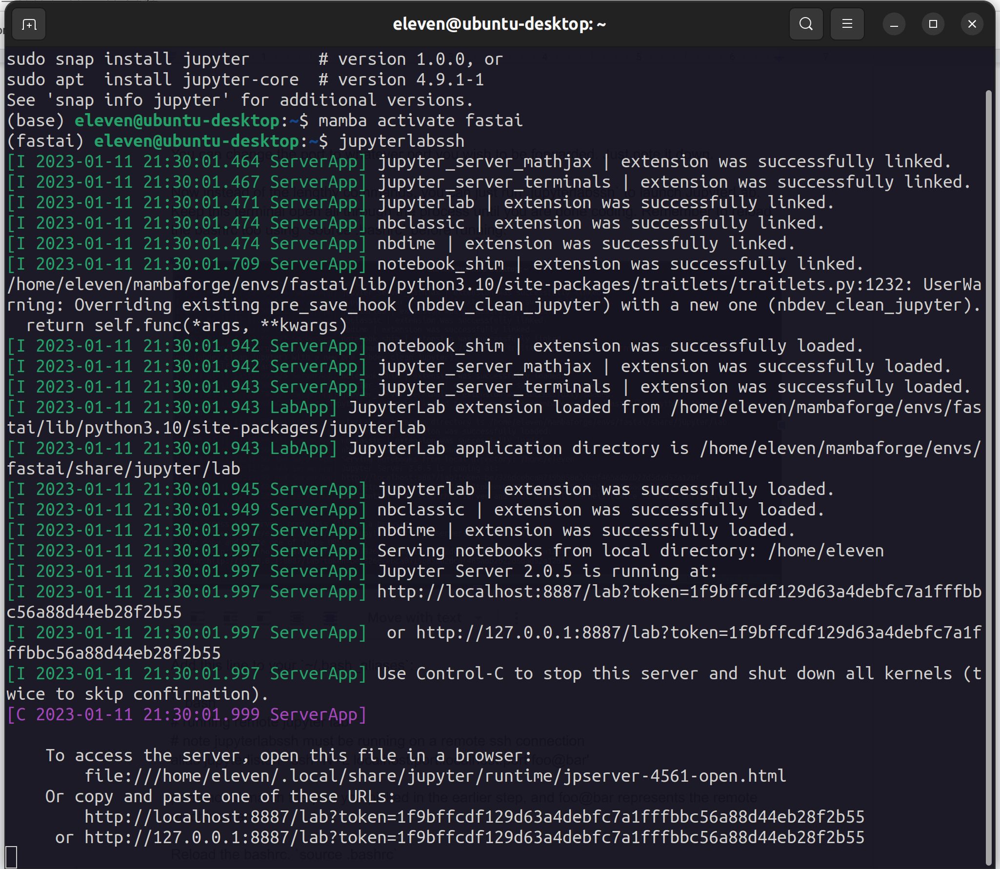

Simplifying Remote Jupyter Lab Execution
Updated on: 24th Jan 2033. Using autossh instead for our jupyterlisten
Introduction
After remotely connecting to my GPU workstation, the next step was figuring out how to run JupyterLab remotely but access it on my local machine (laptop in this case).
I use JupyterLab a lot. From prototyping ideas in an interactive way to writing software and libraries with the help of amazing projects like nbdev.
Simply running JupyterLab on the remote machine and opening the URL on the local machine won’t work. We need to do something called ‘port forwarding’ from the remote machine to the local one.
This tutorial explains how to do it and some theory behind port forwarding. My only problem was typing lengthy commands in my terminal every time I wanted to code. As with many things in Linux, I was sure there was some way to automate this process, specifically with bash scripts.
And sure there was. Some more research led me to this helpful gist, which I tweaked a little bit to work with JupyterLab instead.
Credits to the blog and gist authors!
Automating with Bash Scripts
The following assumes you are using linux on both the remote and local machine. For other setups, you will have to tweak it to suit your platform.
You should have ssh’ed into your remote machine too:
ssh foo@bar
On the remote machine
Add this line to your ~/.bash_aliases:
# remote jupyter lab execution (ssh)
alias jupyterlabssh='jupyter lab --no-browser --port=8887'You can change the port to whatever port you wish to be forwarded. Just note it down.
Now instead of the lengthy commands, you can just run jupyterlabssh to launch JupyterLab. Keep this terminal open all through the process until you are done coding. Remember to reload the bashrc too using source .bashrc before running.

On the local machine
Install autossh. autossh is a program to start a copy of ssh and monitor it, restarting it as necessary should it die or stop passing traffic.
In linux, this is as simple as running:
apt install autosshAdd this line to your ~/.bash_aliases:
# running remote jupyter lab
# note jupyterlabssh must be running on a remote ssh connection
alias jupyterlisten='autossh -N -L localhost:port:localhost:port foo@bar'port should match the port you picked in the earlier step, and foo@bar represents the remote machine name.
Reload the bashrc. source .bashrc
As long as the jupyterlabssh is running on the remote machine, you can now run this command and the ports will be forwarded.
You can then click the JupyterLab URLs on the remote machine’s terminal and happy coding!
Sidenote
It is advised you run the above commands in some terminal multiplexer like tmux so that you can still continue using the terminal. Otherwise you will have to keep open a number of terminals!